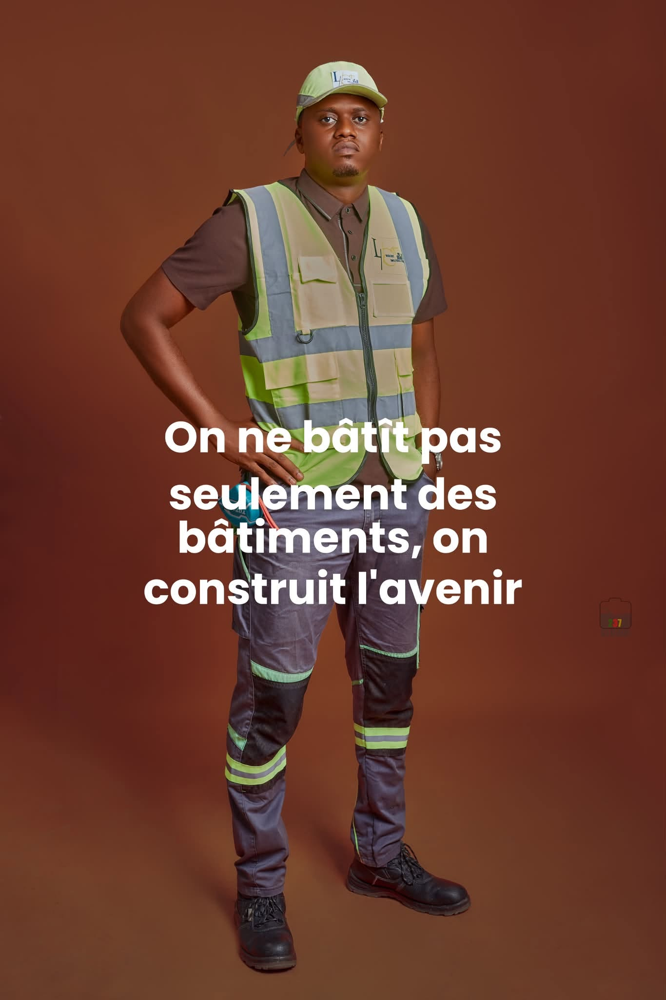
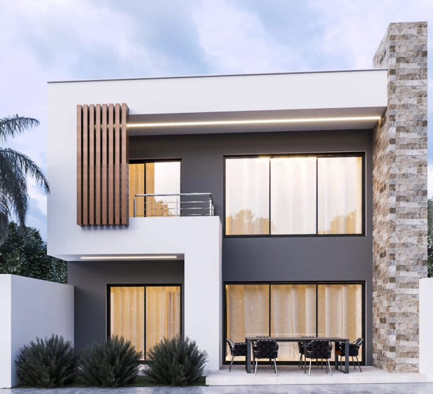
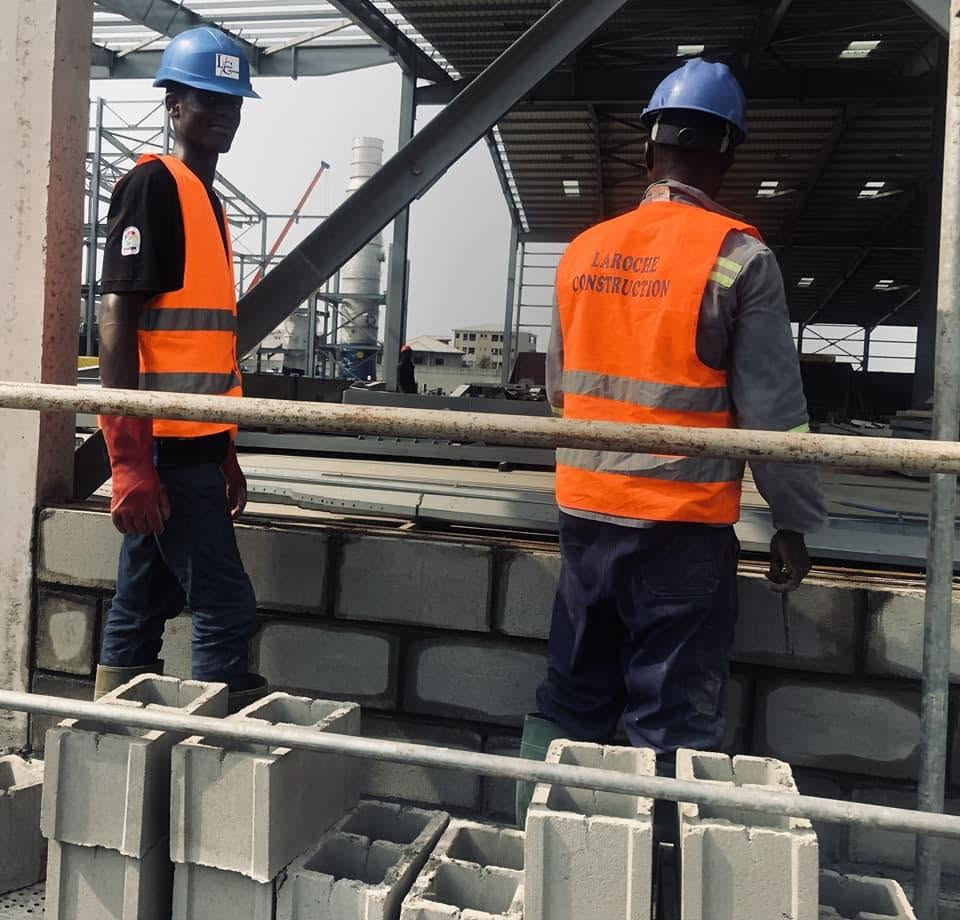
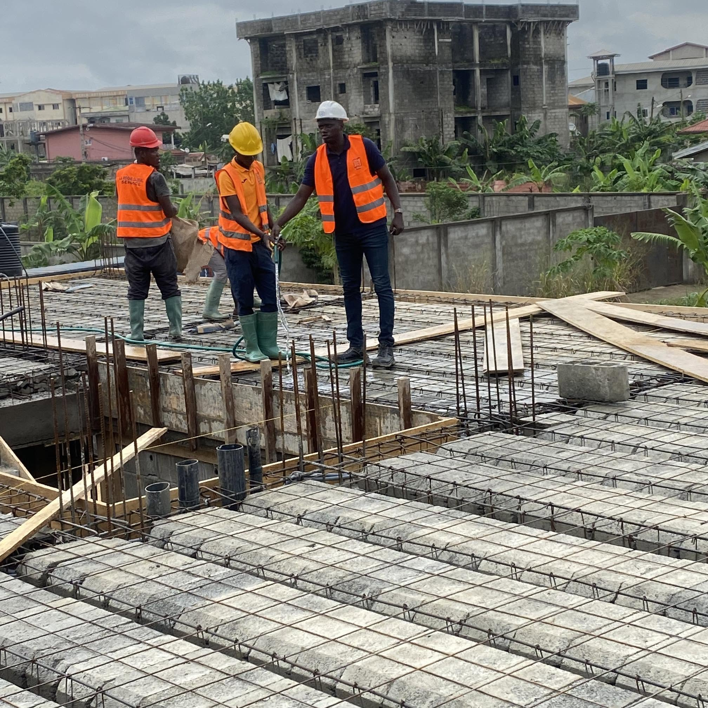
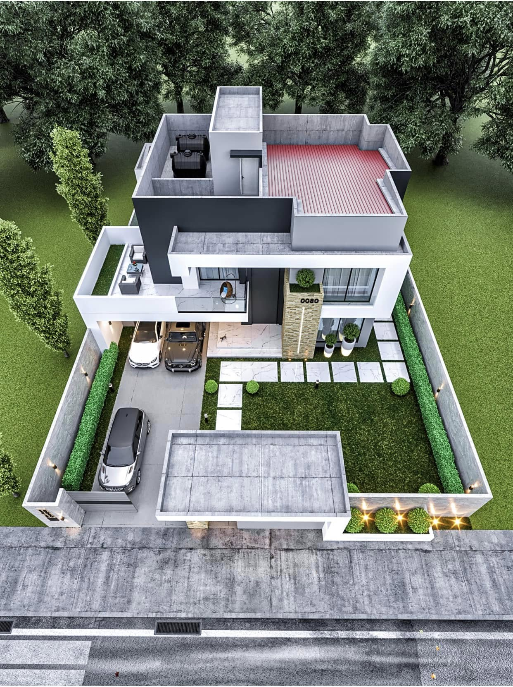
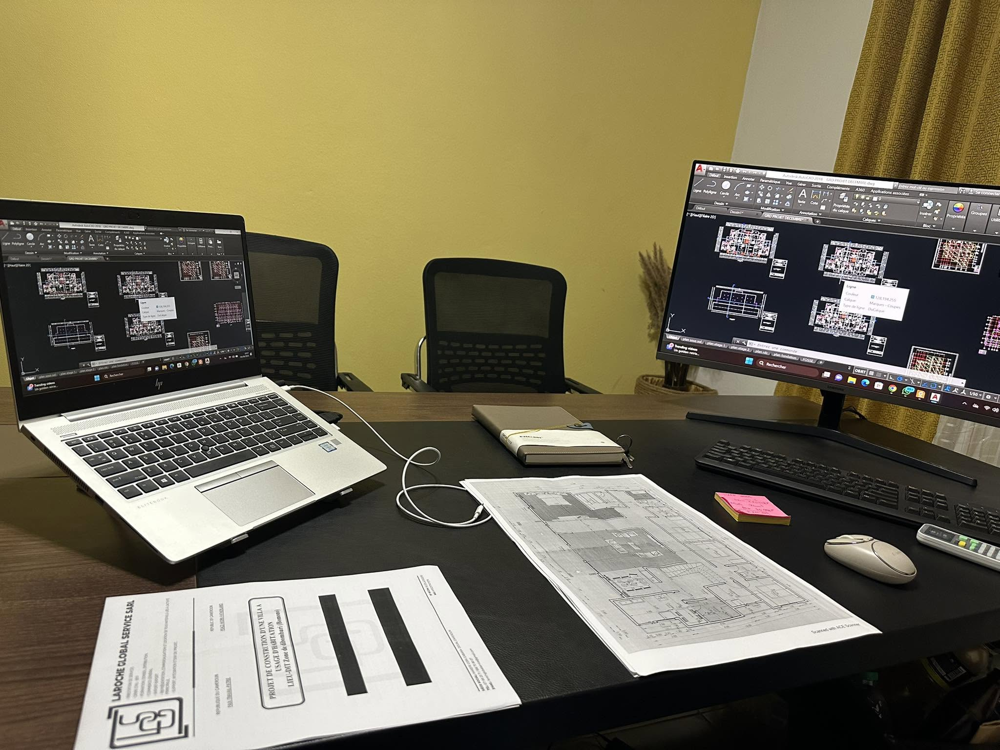

LAROCHE CONSTRUCTION — DEPUIS LE PREMIER JOUR
Construire aujourd’hui.
Façonner demain.
Des fondations solides pour les maisons, les entreprises et les idées qui font avancer nos villes.
CHIFFRES CLÉS
Bâtir la confiance.
Mesurer l'impact.

Les personnesderrière chaque projet ↘
02 — NOTRE APPROCHE
Nous construisons plus que des structures.
Nous créons des possibilités.
Laroche Construction accompagne chaque projet de la première idée à la dernière finition. Notre équipe réunit expertise technique, exigence du détail et compréhension du terrain.
Nous construisons avec une méthode claire, des échanges constants et une vision simple : créer des lieux qui restent utiles, beaux et solides dans le temps.
Découvrir Laroche ↗03 — NOS SERVICES
Notre savoir-faire complet
au service de vos constructions.
Une expertise complète pour donner forme aux projets qui comptent.

Construction
résidentielle
Des maisons pensées pour votre quotidien et bâties pour durer.

Construction
commerciale
Des espaces qui donnent de l'élan à votre activité.

Construction
industrielle
Des structures robustes, conçues avec précision.

Rénovation
Révéler le potentiel d'un lieu existant.

Génie civil
Les infrastructures qui relient les ambitions aux réalités.
Gestion de projet
Un pilotage attentif, du budget à la livraison.
04 — VOTRE PROCHAIN PROJET
Imaginez-le.
Nous vous aiderons à le bâtir.
Décrivez la maison que vous souhaitez. Notre équipe vous accompagne avec une première estimation indicative et les prochaines étapes.
Démarrer votre projet ↗05 — ACTUALITÉS & ÉVÉNEMENTS
Les nouvelles
de Laroche.
Aucune actualité publiée pour le moment.
06 — DONNONS FORME À VOTRE IDÉE